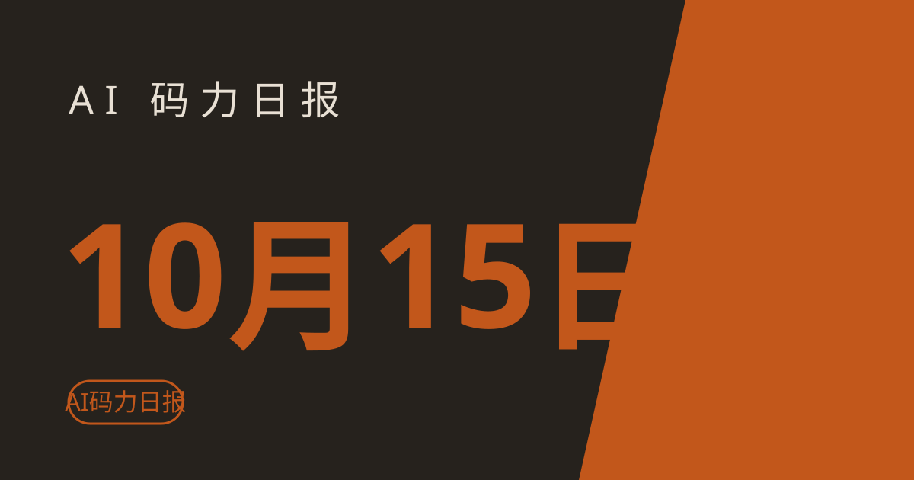

AI 码力日报 · 2026年10月15日

⚡ 一句话速览
- OpenAI 联手洛克菲勒基金会推出 5000 万美元 "Cities Deliver" AI 赠款计划，资助用 AI 改善城市公共服务的项目，申请 11 月 29 日截止。
- Anthropic 把 OpenTelemetry trace 导出做进 Claude 平台（public beta）：每个 agent turn、模型调用、工具使用都能直接打进 Grafana、Sentry、Langfuse。
- Google 据报道正把 DeepMind 伦敦的 AI 工程团队迁往加州，人事地震还在继续。
- 一项覆盖 700 多家公司的研究：AI 编程智能体让代码量涨约 30%，但 Jira 里真正交付的 issue 没涨——瓶颈卡在代码评审。
🤖 今日 AI Coding 动态
Anthropic：Claude 平台支持 OpenTelemetry trace 导出（public beta）
一句话亮点：以后调 Claude API 跑 agent，不用再自己埋点——每个 agent turn、模型调用、工具使用自动变成标准 OpenTelemetry trace，延迟、token 数、ID 全带上，直接进你现有的可观测平台。
覆盖 Claude Managed Agents、Messages API 和 Claude SDK（Python、TypeScript、Go、Java、C#、PHP、Ruby）。API 侧在 Claude Console 里加一个 destination（要组织 Admin 权限），SDK 侧在代码里注册 tracer provider 即可，trace 遵循 OpenTelemetry GenAI 语义约定。内容模式默认只记元数据（metadata only），排查问题时可开 full content（单 span 默认上限 0.75MB）。官方点名的兼容平台：Grafana Cloud、Honeycomb、Sentry、Splunk（排障），Arize、Braintrust、Datadog、Langfuse、LangSmith、New Relic、PostHog（拿生产 trace 做 eval）。Ramp 的早期数据挺实在：靠这套 trace 找浪费，有的 agent token 用量降了 10–20%，会话快了 30%。原文
Google：DeepMind 伦敦 AI 团队据报道迁往加州
一句话亮点：Google 正在把 DeepMind 伦敦总部的 AI 工程工作迁往加州集中，这是继 Demis Hassabis 交棒、Jeff Dean 出走创业之后又一次大动作。
知情人士称这次调整不只是改组织架构——Google 认为下一代前沿模型会在加州造出来，想把决策的人都放在一个屋子里。时间点也耐人寻味：正好卡在 Gemini 4 Argon 全面开放、Meta 也拿出新模型、"比赛重新开打"的这一周。对开发者来说短期没直接影响，但可以预期接下来 Gemini 的迭代节奏会更快、也更偏产品化。原文
研究：AI 编程智能体让代码量 +30%，交付量原地踏步
一句话亮点：代码写得更快了，但活儿干完的速度没变——瓶颈从"写代码"转移到了"审代码"。
这项 10 月 12 日流传开的 review-bottleneck 研究看了 700 多家接入 Copilot、Claude Code、Codex、Cursor 的公司：代码产出涨约 30%，commit 涨约 20%，PR 量涨约 23%，但 Jira 里标记完成的 issue 和 epic 数量没有显著增长。研究者的解释很直白：agent 几秒钟就能吐出一堆函数和测试，但每一行还是要人（或另一个 AI reviewer）检查正确性、安全性和贴合度；review 请求的增速超过了 review capacity，队列把生成速度带来的红利全吃掉了。给团队的启示：上 agent 之前，先想想 review 流程能不能跟上，不然就是给自己造了个 PR 堰塞湖。原文
🐑 今日羊毛
Google：1 万名科研人员免费拿 Antigravity 最高档 6 个月
一句话：随 Gemini 4 Argon 全面开放一起宣布的科研福利——1 万名科学家可免费使用 Antigravity 最高用量档 6 个月，申请已开放。
- 怎么薅：Google 在 10 月 13 日的 Argon 公告里放出的名额，面向科研人员，申请通道已开放（以 Google 官方公告页面的申请入口为准）原文
- 有效期：名额 1 万个，先到先得，用满 6 个月（截至撰写时）
- 适合谁：高校和科研机构做 AI for Science 的人——Antigravity 最高档平时要 Ultra 订阅，量子化学、分子模拟这种重推理任务正好用上
Hacktoberfest Side Hustle：参赛就领合作伙伴免费 credits
一句话：10 月 Hacktoberfest 的开源 AI 挑战赛，参赛者可领 Tinker、Render、Backboard 等合作伙伴的免费 credits 和 promo code，另有 2550 美元奖金池、18 个获奖名额。
- 怎么薅：到 hacktoberfest.com/my 领取合作伙伴 credits；提交一个用到指定合作伙伴技术的开源小项目即可参赛，一个项目可同时报多个合作伙伴赛道（但只能获奖一次）原文
- 有效期：10 月内（Hacktoberfest 当月有效，截至撰写时）
- 适合谁：想练手又缺算力的独立开发者；合作伙伴赛道参赛池小，中奖率反而更高
⭐ 今日 GitHub 热门项目
obra/superpowers
一套给 coding agent 用的"开发方法论 + 可组合 skills"，解决 agent 上来就写代码、不做设计不写测试的问题：先 brainstorm 出需求、经你确认设计、拆成 2–5 分钟小任务，再用 subagent 驱动开发，全程强制 TDD、YAGNI、code review。⭐ 约 29.9 万（截至撰写时），MIT 协议。适合：每天用 Claude Code / Codex / Cursor / Antigravity 干活的人——装一次，19+ 种 agent 工具通用，连 Hermes 和 Muse 都支持。项目地址
Tracer-Cloud/opensre
开源的 AI SRE agent 框架，解决"线上挂了，证据散在日志、指标、trace、runbook、Slack 各处"的问题：接你现有的 60+ 工具（Grafana、Datadog、K8s、PagerDuty、Slack…），agent 自动拉上下文、做根因分析、给修复建议，还能回 Slack/PagerDuty 发总结。带可逆的敏感标识脱敏，token 按 session 计费可查。⭐ 约 1.2 万（截至撰写时），Apache 2.0。适合：管生产环境、半夜被叫醒的运维和 SRE。项目地址
tashfeenahmed/freellmapi
把 34 家免费 LLM 厂商的免费额度（约 635 个模型端点、每月约 74 亿 token）聚合成一个 OpenAI 兼容的 /v1 端点，解决"每家免费额度都不够用、34 个 SDK 和限速管不过来"的问题：智能路由自动选最快的可用模型，429/5xx 自动故障转移，key 加密存本地。Docker 一行命令起，Claude Code、Codex CLI、Gemini CLI、Cursor、Cline、Aider 等都能直接指过去。⭐ 约 3.5 万（截至撰写时），MIT。适合：做原型、跑 demo、不想为 token 掏钱的个人项目——生产环境别指望它。项目地址
liquidslr/system-design-notes
Alex Xu《System Design Interview》上下两册的开源笔记，28 章：从一致性哈希、限流器、分布式消息队列，到设计 YouTube、Google Maps、支付系统、股票交易所。解决"AI 越能写代码，系统设计基本功越值钱"的问题。⭐ 约 2.6 万（截至撰写时）。适合：准备大厂面试、或想补架构课的程序员——配合 AI 写代码，设计能力才是你的护城河。项目地址
🛠️ 值得一试的工具：Google Antigravity
是什么：Google 的 agent-first 编程平台——IDE（VS Code 分支）、桌面 app（多 agent 并行指挥台）、CLI、SDK 四件套，现在 Ultra 档已经可以用上 Gemini 4 Argon。解决什么痛点：Cursor/Claude Code 订阅不便宜，且各家模型分散；Antigravity 一个地方同时用 Gemini、Claude、gpt-oss，agent 能自己规划、写代码、跑测试，还能在浏览器里验证结果。免费额度：Individual 免费版 $0，每周 agent 请求额度（具体数字 Google 不公开）+ 无限 tab 补全；Pro $19.99/月起加量。
verdict：值得试——免费版零成本，Google 自家数据显示 Argon 在 Antigravity 里让 agentic 代码提交涨 35%+、回滚降近三成（官方数据，仅供参考）；但要注意免费额度缩水过不止一次，agent 跑到一半额度用完会直接停，大任务别全押在免费档上。定价详情
🎓 3 分钟小教程：把 Claude API 的 trace 接进你的可观测平台
前置条件：Claude API 账号（组织 Admin 权限，用于 Console 侧配置；纯 SDK 路径不需要）；一个收 OTLP 的地方（Grafana Cloud、Sentry、Langfuse、New Relic、Datadog 都在官方兼容名单里）。
- 打开 Claude Console，给组织添加一个 OTLP destination：填你的可观测平台的 OTLP endpoint 和鉴权信息（Admin 权限）。
- 选 content mode：默认 metadata only（只记延迟、token 数、ID，不碰 prompt 内容）；排查疑难杂症时再开 full content（单 span 默认上限 0.75MB，超了会自动截断并打标）。
- 或者走 SDK：在代码里注册一个 tracer provider（Python、TypeScript、Go、Java、C#、PHP、Ruby 都支持），SDK 的 trace 自动导出，无需特殊权限；Console 和 SDK 两边都配，同一请求的 span 会进同一条 trace。
- 发起一次 Managed Agents 或 Messages API 调用，去平台里看：每个 agent turn、每次模型请求、每个工具调用都是一段 span，带延迟和 token 消耗。
预期效果：agent 到底在干什么、花了多少钱，一条时间线全看清。官方引用的 Ramp 案例：靠这套 trace 找浪费，有的 agent token 用量降了 10–20%，会话快了 30%。注意按 token 记账时同一请求只加一边的 span（有 API span 就用 API 的），别重复算。
数据截至撰写时，仅供参考。
—— Sean